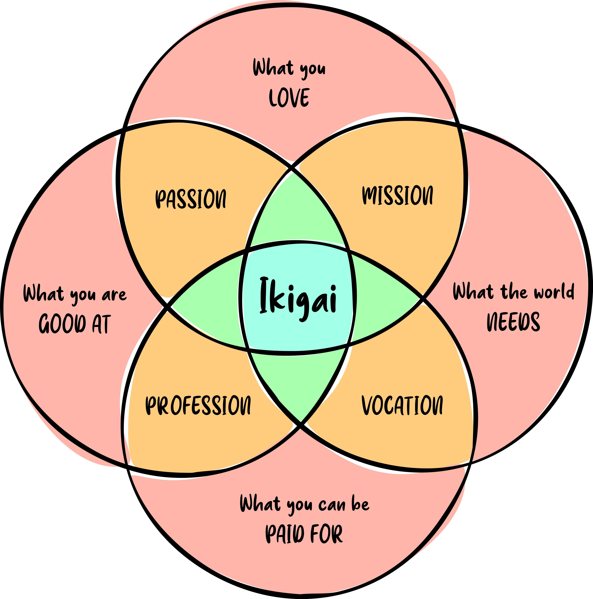

Je suis née au Togo un lundi 23 Janvier 2006 aux alentours de 00h. J'y ai vécu dans un envrironnement aimant jusqu'à mon bac. Je partis alors pour le Maroc où ma relation avec Dieu s'intensifia. Apres deux années au Maroc, je partis pour la France où je suis actuellement.

Le profil de mon identité et de ma mission, centré sur l'essentiel.
Mon Centre